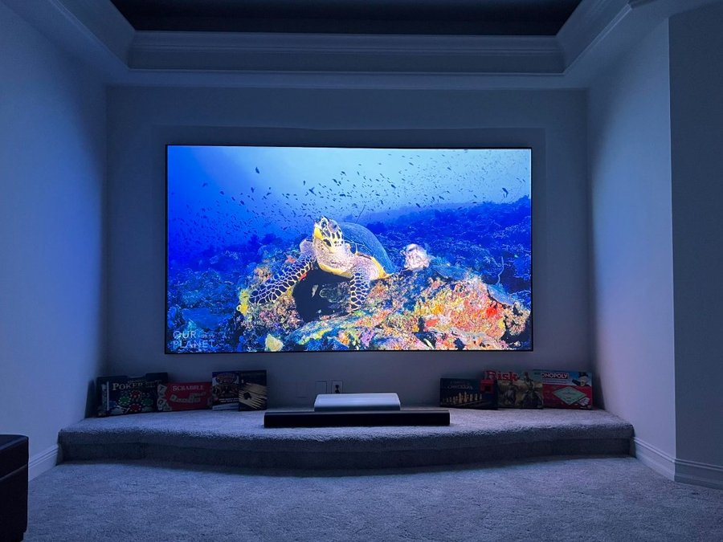
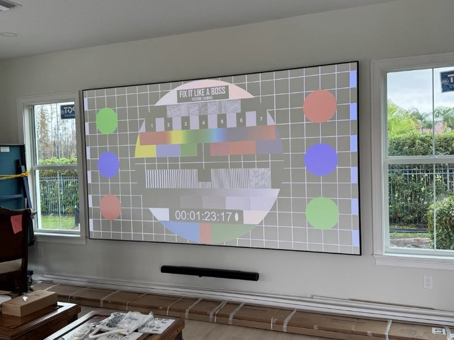

Projector Screens & UST Setups
Fixed-frame screens, ultra-short-throw projectors, and clean installs — sized, mounted, and calibrated so your media room looks and performs like a real cinema.
What's included
- Fixed-frame and motorized screen mounting
- Ultra-short-throw (UST) and ceiling projector placement
- Screen size and throw-distance planning
- Soundbar or surround integration below or around the screen
- Source connections, cable management, and calibration walkthrough
- Testing with your content before we leave
Full surround and seating layout? See Home Theater. Single TV on the wall? See TV Mounting.


Built for the room
A great projector setup is more than hanging a screen — it's sight lines, ambient light, speaker placement, and connections you never have to think about. We install fixed-frame and recessed-screen rooms that feel finished, not like a temporary rig.
- Teal-wall and dedicated theater rooms
- UST laser projectors on custom ledges
- Acoustic-friendly layouts with tower speakers
- One expert from walkthrough to final picture
Common questions
Projector or big TV?
Projectors shine in dedicated, light-controlled rooms. For bright living spaces, a large TV is often simpler. We'll recommend what fits your room and budget.
Do you install ultra-short-throw units?
Yes — UST projectors sit on a credenza or shelf below the screen. We handle placement, connections, and alignment so the image fills the screen cleanly.
Can you add surround sound?
Absolutely. Many projector rooms include a soundbar, tower speakers, or full surround. See Home Theater for full-room builds.
Ready to upgrade your setup?
Reach out for a quick quote or to talk through your project.
Get a Free Estimate